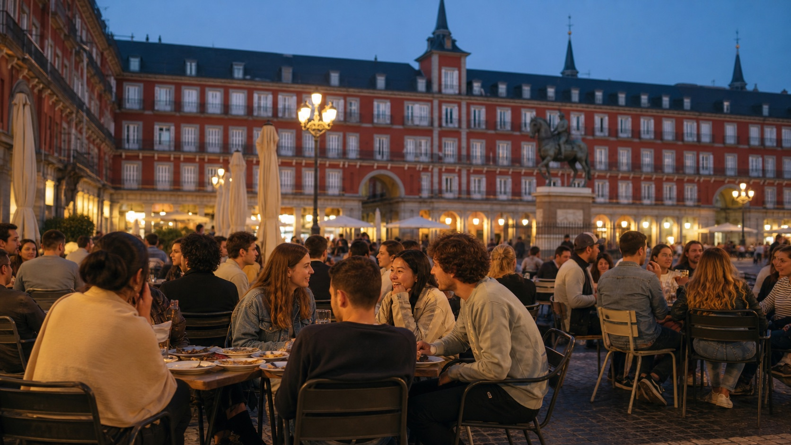

Malasaña
Bar, musica, locali piccoli, atmosfera alternativa. Ottima per serate informali, ma puo' essere rumorosa e costosa in certe vie.
Vivere la citta'
Madrid e' famosa per la sua energia, ma la vita Erasmus non e' solo vita notturna. Funziona meglio quando alterni universita', eventi, sport, cultura e tempo per te.

Le prime settimane decidono molto del ritmo sociale. Non aspettare di avere tutto perfetto: partecipa a eventi universitari, parla con coinquilini e cerca gruppi collegati al tuo ateneo.
Vita notturna Madrid studenti
Madrid ha zone molto diverse: scegli in base al tipo di serata, al budget e al rientro.
Bar, musica, locali piccoli, atmosfera alternativa. Ottima per serate informali, ma puo' essere rumorosa e costosa in certe vie.
Tapas, terrazze e domeniche vivaci. Ideale per socializzare senza per forza fare tardi.
Centrale, inclusiva, piena di locali e vita serale. Buona per gruppi internazionali e serate organizzate.
Molto universitaria, pratica per studenti UCM e UPM. Prezzi spesso piu' accessibili rispetto alle zone piu' turistiche.
Multiculturale, artistica, con eventi e cucine diverse. Controlla sempre la via e il rientro, come in ogni grande citta'.
Piacevoli per passeggiate, cafe' e cultura. Meno economici, ma ottimi per giornate tranquille e studio fuori casa.
Una buona vita sociale a Madrid non dipende solo dai locali. La citta' offre musei, parchi, cinema, eventi gratuiti, mercati, festival e viaggi brevi.
Museo del Prado, Reina Sofia, CaixaForum, Matadero e centri culturali hanno spesso fasce gratuite o riduzioni. Controlla orari e prenotazioni.
Retiro, Madrid Rio, Casa de Campo e biblioteche universitarie sono alternative utili quando vuoi uscire senza spendere.
Toledo, Segovia, El Escorial e Alcalá de Henares sono mete classiche per weekend o gite in giornata.
Molti atenei hanno palestre, campi, tornei e corsi. E' uno dei modi piu' naturali per conoscere studenti spagnoli.
Imparare un po' di spagnolo cambia l'esperienza. Anche se segui corsi in inglese, prova a usare lo spagnolo per spesa, palestra, universita' e coinquilini. Madrid premia chi partecipa.